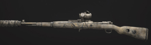
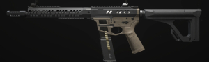
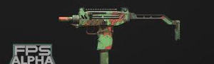
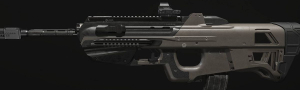
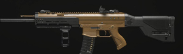

Weapons
- 
- 
- 
- 


- 


KAR 98k
The Karabiner 98k, abbreviated as the Kar98k, is a German bolt-action rifle featured in every game of the Call of Duty series set during World War II, as well as appearing in the Resurrection map pack or the Prestige or Hardened version of Call of Duty Black Ops in Zombies mode, and in Call of Duty: Modern Warfare, Call of Duty: Mobile and Call of Duty: Modern Warfare III. It is used by German soldiers and is usable by the player but is rarely seen in use by other troops of the Allied forces.
Superi 46
The Superi 46 is a submachine gun featured in Call of Duty: Modern Warfare III. It was added as part of the Season Four update.
"This pistol-caliber carbine chambered in 4.6x30mm is designed to give impressive stopping power with a skeletonized, lightweight frame. Exceptionally adaptable, this weapon can be modified to excel in most combat scenarios."
WSP Stinger
The WSP Stinger can be brought into Operation Deadbolt via Create-A-Class, at Common rarity and can be found at any rarity via the Mystery Box for 950 Essence. When upgraded via the Pack-a-Punch Machine or with Aetherium Crystals, it becomes the Euderus Set.
"Keep your enemies close with this highly effective, room-clearing SMG with a blazing fire rate."
BP50
The BP50 is a weapon featured in Call of Duty: Modern Warfare 3 (2023), it is one of the Assault Rifles available in the game.
The BP50 will be added to the game as part of the free content included in Season 2.
The design of the BP50 is based the real-life gun FN F2000.
FJX Horus
The FJX Horus is a weapon featured in Call of Duty: Modern Warfare 3 (2023), it is one of the SMGs available in the game.
The FJX Horus will be added to the game as part of the free content included in Season 3.
The design of the FJX Horus is based the real-life gun Brugger & Thomet MP9-N.
Holder 26
The WSP Stinger can be brought into Operation Deadbolt via Create-A-Class, at Common rarity and can be found at any rarity via the Mystery Box for 950 Essence. When upgraded via the Pack-a-Punch Machine or with Aetherium Crystals, it becomes the Euderus Set.
"Keep your enemies close with this highly effective, room-clearing SMG with a blazing fire rate."
MCW
The WSP Stinger can be brought into Operation Deadbolt via Create-A-Class, at Common rarity and can be found at any rarity via the Mystery Box for 950 Essence. When upgraded via the Pack-a-Punch Machine or with Aetherium Crystals, it becomes the Euderus Set.
"Keep your enemies close with this highly effective, room-clearing SMG with a blazing fire rate."
MTZ 556
The WSP Stinger can be brought into Operation Deadbolt via Create-A-Class, at Common rarity and can be found at any rarity via the Mystery Box for 950 Essence. When upgraded via the Pack-a-Punch Machine or with Aetherium Crystals, it becomes the Euderus Set.
"Keep your enemies close with this highly effective, room-clearing SMG with a blazing fire rate."
Holder 556
The WSP Stinger can be brought into Operation Deadbolt via Create-A-Class, at Common rarity and can be found at any rarity via the Mystery Box for 950 Essence. When upgraded via the Pack-a-Punch Machine or with Aetherium Crystals, it becomes the Euderus Set.
"Keep your enemies close with this highly effective, room-clearing SMG with a blazing fire rate."